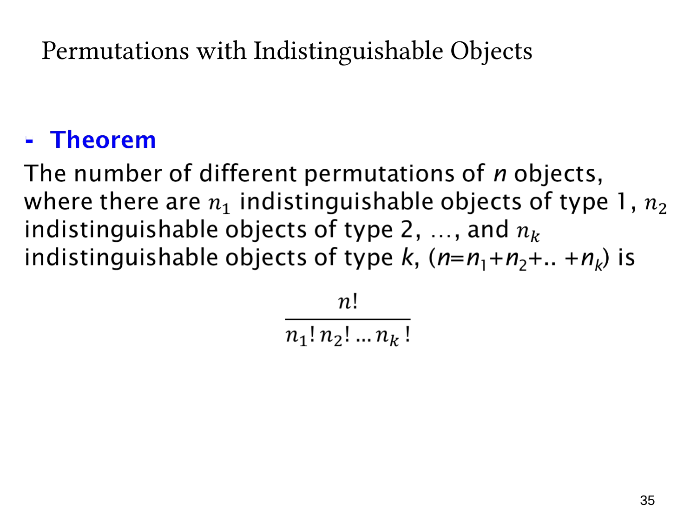

L1.6 · 第 35 页讲解原文
查看这一页课件

多种相同对象的排列公式
共有 n 个对象，分成 k 种类型，第 i 类有 ni 个。同类对象不可区分，不同类可以区分，且
n1+n2+⋯+nk=n.
将全部对象排成一列，不同可见排列数为
n1!n2!⋯nk!n!.
证明可以沿用编号法：先将所有个体暂时编号，得到 n! 个排列。对于任意一个可见类型序列，第 i 类的编号可交换 ni! 种，各类交换独立，所以每个可见排列都被计算 n1!⋯nk! 次。除去重复因子便得到公式。
例如两红、两蓝、一个绿的排列数为 5!/(2!2!1!)=30。如果所有对象都不同，每个 ni=1，公式回到 n!；如果只有一种类型，n1=n，则结果是 1。
这个表达式也称多项式系数（multinomial coefficient）。使用它时，必须先清楚“交换哪些对象不会改变结果”，并确认每一类数量固定、全部对象都被使用。